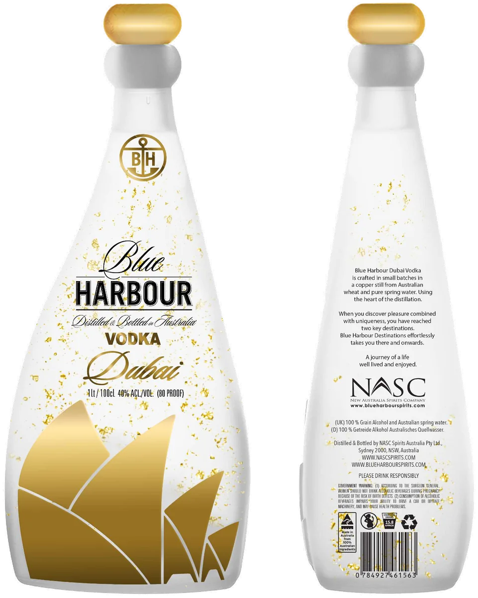

Blue Harbour Destinations Vodka — Dubai
40% Alc. by Vol. · 80 Proof · 1 Litre
Sail away with us on a voyage of revelation and discovery. Inspired by the timeless sail boats and shimmering waters of the Blue Harbour.
Our Blue Harbour DBX is a Vodka crafted in a multiple plate column copper still from Australian wheat, filtered 5 times, diluted with fresh Australian spring water and hand bottled, resulting in the cleanest and softest spirit with hints of citrus. We then add edible gold flakes.
Blue Harbour DBX is an ultra soft sipping Vodka, better drunk neat or on the rocks.
- Profile
- Ultra Smooth / Citrus notes
- Raw material
- Australian wheat
- Water
- Australian spring
- Still
- Copper
- Filtration
- Active carbon
- Glass
- Clear printed flint
- Bottle
- 1 Litre · 30.5 cm high